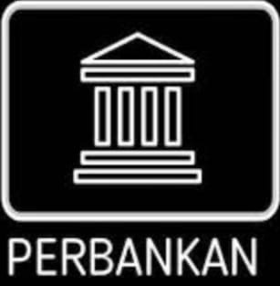

SMK Bina Informatika
"Membangun Generasi Unggul & Berkarakter"
Rekayasa Perangkat Lunak (RPL)
Fokus: • Pengembangan aplikasi berbasis web, mobile, dan desktop. Apa yang dipelajari: • Bahasa pemrograman (seperti HTML, CSS, JavaScript, Java, Python) • Pembuatan aplikasi dan sistem informasi • Basis data (MySQL, Firebase, dsb) • UI/UX (User Interface & User Experience Design) • Software engineering (perencanaan dan pengujian aplikasi) Peluang Kerja: • Web Developer • Mobile App Developer • Software Engineer • UI/UX Designer • Game Developer.

Multimedia
Fokus pada desain grafis, animasi, dan video editing.
OTKP
Fokus: • Administrasi modern berbasis teknologi dan digitalisasi perkantoran. Apa yang dipelajari: • Korespondensi dan komunikasi bisnis • Pengelolaan dokumen & arsip digital • Aplikasi perkantoran (Microsoft Office, Google Workspace) • Manajemen waktu dan pelayanan pelanggan • Etika dan protokol kantor Peluang Kerja: • Sekretaris • Administrasi Perkantoran • Resepsionis • Staf HRD • Customer Service
Teknik Komputer dan Jaringan (TKJ)
Fokus: • Jaringan komputer, instalasi, pemeliharaan perangkat keras dan software. Apa yang dipelajari: • Instalasi dan konfigurasi jaringan LAN/WAN • Mikrotik, Cisco, server dan sistem operasi jaringan • Troubleshooting perangkat keras (hardware) dan software • Keamanan jaringan (cybersecurity dasar) • Cloud computing dan jaringan nirkabel (WiFi) Peluang Kerja: • Network Engineer • Teknisi Komputer • Administrator Jaringan • IT Support • Sistem Administrator
PKM
Fokus: • Layanan keuangan, transaksi perbankan, dan manajemen keuangan mikro. Apa yang dipelajari: • Akuntansi dasar dan laporan keuangan • Transaksi perbankan dan layanan nasabah • Keuangan mikro dan koperasi • Pengelolaan uang, tabungan, dan investasi kecil • Penggunaan software akuntansi (MYOB, Accurate) Peluang Kerja: • Teller Bank • Customer Service Bank • Staf Keuangan • Pegawai Koperasi • Wirausahawan Mikro.
